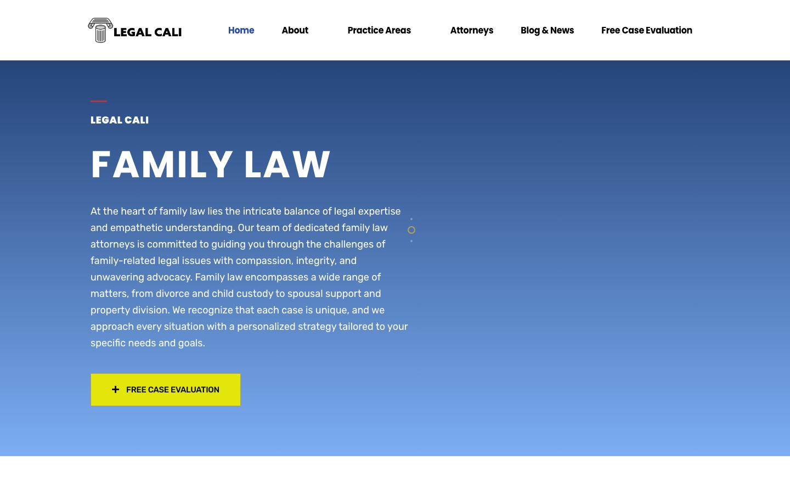
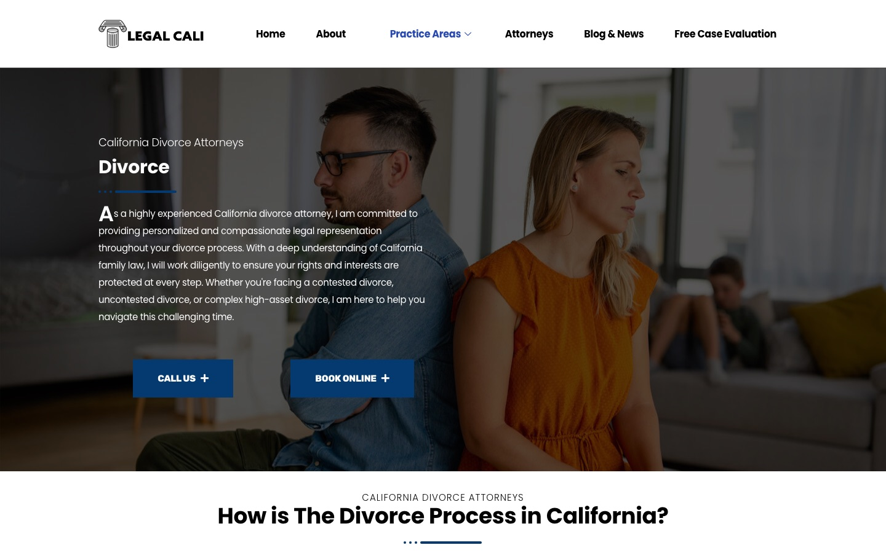

Case study · Law firms
Legal Cali: WordPress and technical SEO for a multi-practice California law firm
A multi-practice California firm site on WordPress and Elementor: 15 service pages, an AIOSEO baseline, and an audit of what still needs work.
At a glance
- Who it's for
- A California firm that handles family, probate and civil matters under one brand and needs each practice area, and each attorney, to be findable.
- Core stack
- WordPress 6.4, Elementor 3.26, All in One SEO Pro 4.9.3, Gravity Forms, MonsterInsights
- What sets it apart
- One brand with depth: 15 service pages, 19 attorneys named on one roster page, and a blog with 372 posts in its sitemap.
The live site
The homepage and one practice-area page, captured in October 2026. Each opens the live page.


The challenge
Legal Cali presents one brand across several kinds of work: divorce and custody, trust and will disputes, contract and business litigation, and real estate disputes. A single site has to give each of those searches its own landing page, and still read as one firm.
It also has to show who the lawyers are. The roster is long, and visitors need a short path from any page to a free case evaluation or a phone call.
What is built
The site runs on WordPress with Elementor. Practice areas live as individual pages under /service/, attorneys under /team/, and news articles under dated URLs. Every page ends with the same call block, "Schedule Your Free Case Evaluation", with Call Us and Book Online buttons and a footer list of practice areas.
All in One SEO Pro generates titles, canonicals (tags that tell search engines which address is the main one), JSON-LD (structured data that describes the page to search engines) and the XML sitemap. The footer states that WadeLitigation owns and operates Legal Cali. The end of this page lists other sites that link to each other and share design and content patterns.
Key pages and structure
Counts come from the site's own XML sitemaps and page source, October 2026.
- 01
Service pages
15 practice-area pages in the services sitemap: divorce, custody, child support, spousal support, family law, restraining order, start a lawsuit, defend from a lawsuit, contract dispute, business litigation, real estate litigation, probate litigation, will contest, trust disputes and estate administration litigation.
Pattern:
/service/divorce/, one page per topic. - 02
Attorney profiles
The attorneys page lists 19 names. The homepage shows 11 of them, and the sitemap holds 22 team URLs. Profiles carry admission, education and experience sections.
Pattern:
/team/david-chon/. - 03
Blog
372 posts in the post sitemap, dated 2023 (35), 2024 (95), 2025 (65) and 2026 (177). The latest is dated 15 October 2026. Topics are civil and contract litigation, such as anti-SLAPP motions and the statute of frauds.
Pattern:
/2026/10/15/post-slug/. - 04
Conversion pages
A free case evaluation page with a form, a Book Online link, a thank-you page after booking, and a "not viable" page for people whose matter the firm does not take. One phone number, +1 866 903 7848, is used on every page checked.
Forms: Gravity Forms and MetForm are both loaded.
- 05
Supporting pages
About, awards, FAQ, practice areas, disclaimer, terms and a privacy page whose slug is
/private-policy/. A case-study section lists nine case pages.Pages in the page sitemap: 14.
Technical SEO baseline
What is in place on legalcali.com, read from the page source, robots.txt, sitemaps and response headers.
- /service/ and /team/ URLs15 and 22 in the sitemaps
- AIOSEO Pro 4.9.3title, canonical, Open Graph
- JSON-LD graphOrganization, WebSite, WebPage
- Sitemap indexposts, pages, services, teams, cases
- Evaluation and trackingGravity Forms, MonsterInsights
- Every page checked returns a canonical tag, Open Graph and Twitter card tags (tags that control how a link previews when shared),
max-image-preview:large, and a JSON-LD graph with BreadcrumbList, Organization, WebPage and WebSite. - robots.txt (the file that tells search engines which areas to skip) blocks only
/wp-admin/, allowsadmin-ajax.php, and listssitemap.xmlandsitemap.rss. The sitemap index is generated by AIOSEO and has separate files for posts, pages, services, teams and cases. - The http and www hosts answer with a 301 redirect, an unknown URL returns a real 404, and the REST API at
/wp-json/is open.
Audit findings
Where the site still has room to improve.
Homepage has no H1
The homepage source has no H1 (the main page heading that search engines read). Its headings start at H2 (second-level headings) ("Probate Litigation", "Family Law", "Civil Litigation"). On the divorce page the first heading is an H4, and the single H1 is further down and reads "How is The Divorce Process in California?". The other 14 service pages each have one H1, but the order of headings above it was not checked on each.
Title tags and homepage description
Every title ends in "Legal Cali | Premium California Attorneys" and the homepage title begins "Home -". The homepage meta description is a run of page text ("Legal Cali Probate Litigation Probate litigation can arise from...") rather than written copy, and the attorneys page description does the same.
Image alt text
The homepage has 22 images and 6 have empty alt attributes. Service pages have 6 to 8 empty alts out of 10 or 11 images, and a sample attorney profile has 4 empty out of 6. None are missing the attribute, so the fix is to fill them in.
Caching and runtime
The homepage is sent with
cache-control: no-store, no-cache, must-revalidate. The server reports PHP 7.4.33, which is end of life, and the site reports WordPress 6.4.13, which is worth checking against the latest release. Several tracking cookies and a PHP session cookie are set on the first request.Stale footer and a typo
The footer reads "©2024, WadeLitigation" in October 2026 and links "Privacy Policty". The privacy page lives at
/private-policy/and its title is "Private Policy".Template content left on the site
The
/case-study/page shows nine case entries such as Medical Negligence, Intellectual Property and Competition and Antitrust, which are not practice areas listed on the site. The FAQ page description talks about securities lawyers and applications. Both look like leftover template text.Roster inconsistencies
Attorney counts differ across the homepage (11), the attorneys page (19) and the team sitemap (22). The attorneys page description says "Xochitl Quezada" while the heading says "Xochitl Urena". Trust claims such as "289+ years of combined experience" and "Top Rated Law Firm" name no source or date.
Sparse organisation schema
The Organization JSON-LD holds only a name, description and URL. No logo, telephone, address or sameAs profiles (links to the business's other official pages) are present, and the type is not LegalService. No street address was found in the footer.
Technology stack
Taken from the page source and response headers.
- Platform
- WordPress 6.4.13
- Elementor 3.26.0
- ElementsKit Lite
- Exclusive Addons
- privsa theme
- SEO
- All in One SEO Pro 4.9.3
- JSON-LD schema
- XML sitemap index
- Leads and analytics
- Gravity Forms
- MetForm
- MonsterInsights
- HandL UTM Grabber
- Hosting
- Apache
- PHP 7.4.33
Business value
What the setup enables. No ranking or traffic numbers are claimed.
- Gives each practice area its own page, title and canonical, so family, probate and civil searches can land on a matching page.
- Publishes named attorney profiles and a steady stream of explanatory articles, which supports trust and topical coverage.
- Offers three routes to contact on every page: a phone number, an online booking link and the free case evaluation form.
- Turns the audit above into a short fix list: headings, alt text, written descriptions, caching, PHP and stale content.
Part of the same site network
These sites link to each other and share design and content patterns, each with its own write-up. The Legal Cali footer names WadeLitigation as its owner; this page does not state who owns the others.
- 01
Awarded Attorneys
Civil litigation brand.
- 02
Wade Litigation
Founder-led firm site with location pages.
- 03
California Probate Attorneys
Probate-only niche site.
- 04
California Civil Attorneys
Civil litigation service pages.
Need SEO and WordPress work like this?
Tell us what the site needs to do and we will scope it with you on a call.